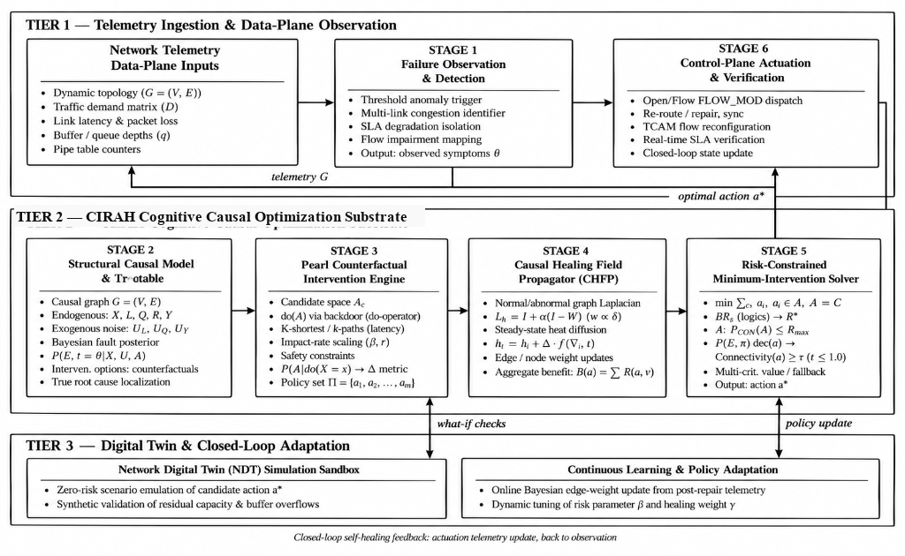
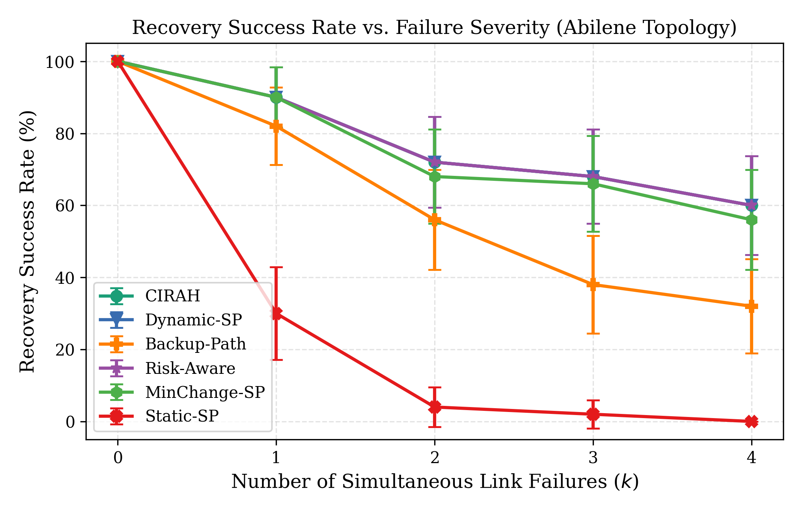
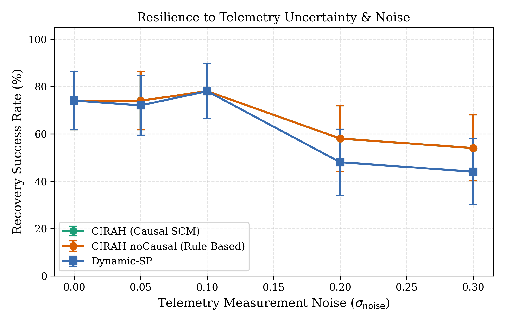
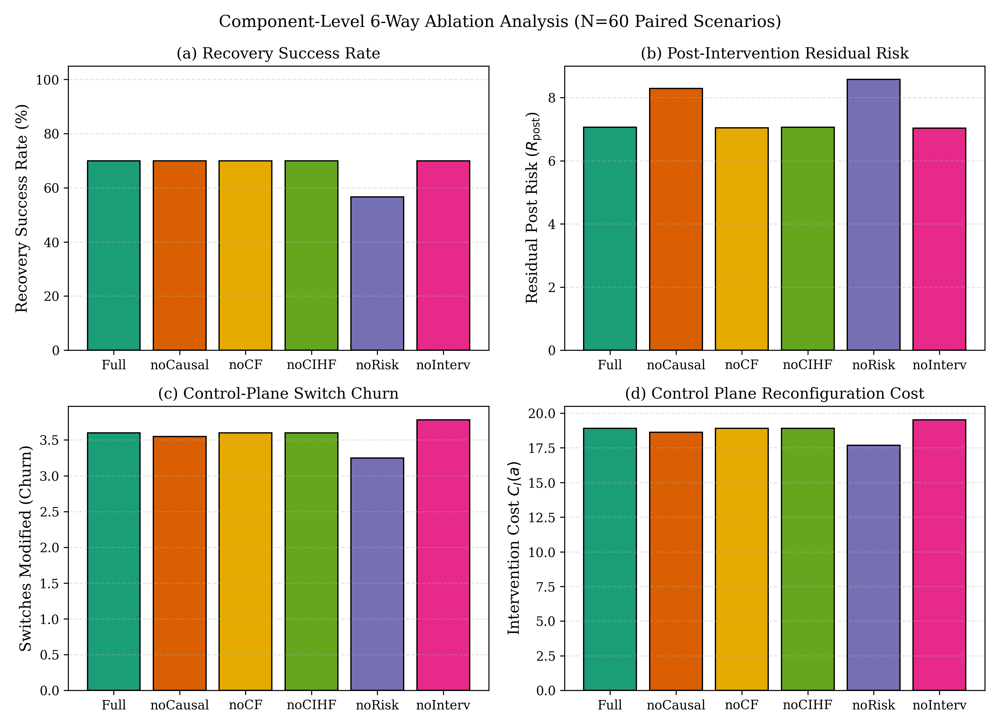

CIRAH: Minimum-Causal-Intervention Optimization
for Risk-Constrained Autonomous Network Self-Healing
1School of Computer Science and Engineering,
VIT-AP University, Amaravati, Andhra Pradesh 522237, India
Abstract. Modern software-defined communication networks face unpredictable link outages, performance degradation, and cascading congestion that jeopardize strict service-level agreements (SLAs). Conventional self-healing techniques rely on reactive shortest-path recomputation or correlation-based heuristic rerouting; however, these approaches frequently trigger excessive switch reconfiguration churn, control-plane message storms, and secondary congestion cascades across un-intervened paths. This paper presents CIRAH (Causal-Intervention Risk-constrained Autonomous network self-Healing), an optimization framework for autonomous network restoration. CIRAH establishes an explicit Structural Causal Model (SCM) connecting physical faults, link degradation, dynamic M/M/1 queuing delays, routing topology, and end-to-end service outcomes. Leveraging Pearl's counterfactual $do$-calculus, CIRAH estimates the consequence of candidate interventions prior to execution. A constrained combinatorial optimizer selects the minimum-cost intervention that satisfies robust post-recovery risk ceilings ($R_\text{post} \le R_\text{max}$) and SLA recovery confidence thresholds, supported by an automated safe fallback mechanism that identifies physical network partitions. Across paired Monte Carlo runs on the Abilene topology under double-link failures ($k{=}2$), CIRAH reduces the mean number of modified switches from 3.78 to 3.26 — a 13.8% reduction ($p = 0.00082$, Cohen's $d_z = -0.56$) — and decreases control-plane intervention cost by 9.3% ($p = 0.00089$), while achieving an identical 72.0% recovery success rate as reactive Dynamic-SP. A 6-way ablation study confirms that the hard risk constraint is the dominant component: removing it drops recovery success from 70.0% to 56.7%.
Keywords: Autonomous network self-healing · Structural Causal Models · Pearl's $do$-calculus · Minimum-causal intervention · Risk-constrained optimization · Software-Defined Networking
Software-Defined Networking (SDN) centralizes control intelligence, granting network operators programmatic visibility and fine-grained forwarding control across distributed data-plane switches [1, 2]. Despite these architectural advantages, wide-area and data-center networks operate under intense dynamic volatility, where physical fiber cuts, optical transponder brownouts, hardware failures, and bursty traffic surges trigger severe service degradation [3, 4]. When outages occur, the network management system must autonomously detect the fault, diagnose the underlying cause, compute a remedial configuration, and verify service restoration with minimal downtime [5, 6].
While autonomous recovery has been widely explored, existing paradigms exhibit distinct operational limitations. Reactive Shortest-Path Rerouting restores connectivity but ignores control-plane churn, frequently modifying extensive switch sets and creating transient forwarding loops [7, 10, 11]. Precomputed Protection Paths (Fast Reroute) offer sub-50 ms restoration [3, 7] but exhaust switch TCAM resources and fail under concurrent multi-link failures. Risk-Aware Routing penalizes high-risk links [4, 6] but does not penalize the operational cost of reconfiguration. Deep Reinforcement Learning (DRL) policies [16, 19, 23] lack formal safety constraints and require immense offline training datasets [11]. Correlation-Based Diagnosis fails to distinguish root causes from downstream symptoms [10, 14, 27], leading to misdirected interventions. Existing systems also lack the capability to evaluate counterfactual queries — formally assessing what the post-recovery latency and risk distribution would be if action $a$ were executed [8, 9].
Although prior network-recovery approaches address fault diagnosis, path restoration, and risk-aware routing, the extent to which causal uncertainty, intervention-induced congestion, and control-plane reconfiguration costs can be jointly incorporated into a risk-constrained recovery decision remains to be established. This work investigates a unified intervention-selection formulation and evaluates the independent contribution of its causal prediction, graph-based stress-relief, and risk-control components under controlled network failure scenarios. The central research question is:
Can a network self-healing controller select a feasible recovery action that maintains service, satisfies an explicit post-recovery risk limit, and minimizes operational intervention cost while accounting for uncertainty in fault diagnosis and predicted recovery outcomes?
H1 (Intervention Parsimony). CIRAH achieves a statistically significant reduction in switch modifications and control-plane intervention cost compared to reactive Dynamic-SP ($p < 0.05$).
H2 (Risk Compliance). CIRAH maintains post-recovery risk strictly beneath the prescribed threshold $R_\text{max}$, whereas unconstrained variants exhibit elevated violations.
H3 (Noise Resilience). Under high telemetry observation uncertainty ($\sigma_\text{noise} \ge 0.20$), causal Bayesian fault estimation maintains a higher recovery success rate than heuristic rule-based diagnosis.
H4 (Scalability). The parsimonious intervention advantage of CIRAH persists across small backbones (Abilene, 11 nodes) and larger meshed networks (GEANT, 22 nodes; Fat-tree, 20 nodes).
SDN architectures decouple control and data planes via OpenFlow [5, 6]. Sharma et al. [7] studied proactive protection versus reactive restoration, showing protection achieves sub-50 ms failover at the cost of rapid TCAM exhaustion. Qin et al. [3] introduced FAPR, balancing proactive backup selection with reactive restoration. Yusuf et al. [4] formulated adaptive path selection using flow classification and composite QoS metrics. Li et al. [31] examined path selection for link-failure protection in hybrid SDNs, showing selective SDN upgrade minimizes repair-path length and transient congestion. None of these works model the control-plane message cost incurred during large-scale reconfigurations.
Risk-aware routing avoids links vulnerable to failure or buffer overflows [4, 6]. Risk-aware traffic engineering incorporates probabilistic link availability into path optimization for wide-area SDN deployments [3, 4, 31]. Machine-learning methods for short-term traffic-flow prediction [32] have been explored to trigger proactive restoration. However, these formulations do not enforce hard post-recovery risk ceilings, nor penalize the operational overhead of modifying forwarding entries.
Causal inference, formalized by Pearl [9], distinguishes observational correlation $P(Y \mid X)$ from interventional manipulation $P(Y \mid do(X))$. In networking, causal directed graphs have been applied to root-cause fault localization [8, 9]. Wang et al. showed that DAG-based traceback suppresses false positives caused by symptom propagation. However, existing causal approaches terminate at fault localization; they do not integrate counterfactual outcome prediction directly into an online intervention optimization algorithm.
The concept of autonomous network management originated with Clark et al.'s Knowledge Plane [8]. Recent Network Digital Twins (NDTs) [1, 6] provide virtualized environments for risk-free simulation. Sanz Rodrigo et al. [1] produced high-fidelity digital twin datasets demonstrating zero-touch SLA preservation. Deep learning models have been applied to anomaly detection and DDoS mitigation in SDNs, encompassing systematic reviews [11], DNN-based classifiers [15, 21], optimised AI models [17, 18], hybrid frameworks [12, 13, 20, 22, 24–26, 33–35], attention-driven methods [27, 30], IoT-aware extensions [19, 29], and ensemble methods [14, 23]. CIRAH bridges the gap between causal fault localization and risk-constrained intervention optimization.
Table 1 compares CIRAH against representative approaches across eight dimensions. CIRAH is the only method combining Bayesian SCM diagnosis, Pearl's $do(A)$ counterfactual evaluation, fine-grained intervention cost, a hard risk bound, and a robust Laplacian-diffusion stress visualization.
Table 1. Technical comparison of network fault recovery approaches.
| Approach | Causal Diag. | CF Pred. | Interv. Cost | Risk Treatment | Net-wide Effects | Uncertainty | Guarantees | Validation |
|---|---|---|---|---|---|---|---|---|
| FAPR [3] | No (Heartbeat) | No | Resource proxy | None | Local link | Deterministic | None | Mininet |
| Yusuf et al. [4] | No (Threshold) | No | None | None | Path-level | None | None | Simulation |
| Polat & Polat [10] | No (Rules) | No | None | None | None | None | None | Mininet/POX |
| Hnamte et al. [15] | No (DNN) | No | None | None | Local drop | Softmax | None | Authentic traces |
| Paidipati et al. [16] | No (DRL) | No | None | Soft penalty | Global reward | Replay | None | Cloud sim. |
| Leena et al. [28] | Correl. GNN | No | Path cost | None | Neighb. GNN | Cluster | None | Emulation |
| Dynamic-SP [7] | Link-down | No | None | None | Local status | None | None | Sim./Testbed |
| Constr.-MinChg. | Link-down | No | Switch diff | Hard bound | Local status | None | Risk feasib. | Simulation |
| CIRAH | Bayesian SCM | Pearl $do(A)$ | Fine-grained | Hard bound | Laplacian CIHF | 3-State+Noise | Robust bound | Abilene, GEANT, Fat-tree |

The CIRAH architecture comprises three functional tiers organized into a closed-loop control system (Fig. 1). Tier 1 (Telemetry and Observation) performs continuous monitoring of link latency, loss, flow rates, and switch port statistics. Tier 2 (Cognitive Causal Optimization Substrate) executes SCM-based Bayesian fault traceback, Pearl counterfactual intervention evaluation, CIHF diffusion, and the risk-constrained minimum-intervention solver. Tier 3 (Network Digital Twin and Adaptation) provides virtual state emulation for risk-free what-if validation and continuous Bayesian model adaptation.
We define the network state using a 6-tuple SCM $\mathcal{M} = \langle \mathcal{U}, \mathcal{V}, \mathcal{F}, P(\mathcal{U}) \rangle$ with exogenous variables $\mathcal{U} = \{U_\text{loss}, U_\text{lat}\}$ and endogenous variables: fault state $F_e \in \{0, 1, 2\}$ (Normal, Degraded, Severed); link properties $L_e = \langle \text{lat}_e, \text{loss}_e, \text{cap}_e \rangle$; queue utilization $Q_e \in [0,1]$; routing matrix $R$; service outcomes $Y_f$; and candidate intervention $A$. The causal DAG assumes $F_e \to L_e$, $\{L_e, R\} \to Q_e$, $Q_e \to Y_f$, and $A \to R$, with no hidden common causes between independent link faults. Link state and queuing dynamics follow:
$$L_e = \begin{cases} \langle \text{lat}_0, 0, \text{cap}_0 \rangle + U_{L,e}, & F_e = 0 \\ \langle \text{lat}_0(1+\delta), \text{loss}_\text{deg}, \text{cap}_0\rho \rangle + U_{L,e}, & F_e = 1 \\ \langle \infty, 100\%, 0 \rangle, & F_e = 2 \end{cases} \tag{1}$$ $$\text{Load}_e = \sum_{f \in \mathcal{F}} R_{f,e} \cdot d_f, \qquad Q_e = \frac{\text{Load}_e}{\max(1, \text{cap}_e)} \tag{2}$$Queuing delay follows an explicit M/M/1 formulation with buffer saturation:
$$D_{\text{queue},e} = \begin{cases} \dfrac{\text{Load}_e}{\max(1, \text{cap}_e - \text{Load}_e)} \cdot 2, & Q_e < 0.85 \\[6pt] 15 + 35\!\left(\dfrac{Q_e - 0.85}{0.15}\right)^{\!1.5}, & 0.85 \le Q_e \le 1 \\[6pt] 50 + (Q_e - 1)\cdot 80, & Q_e > 1 \end{cases} \tag{3}$$Given noisy telemetry $\mathcal{O}_e = \langle \hat{\text{lat}}_e, \hat{\text{loss}}_e, \text{status}_e \rangle$ and active paths traversing $e$, the unnormalized posterior score for state $k \in \{0,1,2\}$ is:
$$s_k(e) = P(\mathcal{O}_e \mid F_e{=}k)\cdot P(F_e{=}k)\cdot w_k(\text{Paths}) \tag{4a}$$with priors $P(F_e{=}0) = 0.95$, $P(F_e{=}1) = 0.03$, $P(F_e{=}2) = 0.02$ reflecting ISP backbone base rates. Path-evidence multipliers for all three states are:
$$w_0 = \frac{1}{1 + 3\rho_e},\quad w_1 = 1 + 2.5\rho_e,\quad w_2 = 1 + 4\rho_e \tag{4b}$$where $\rho_e = N_\text{degraded}(e) / \max(1, N_\text{traversing}(e))$. The normalized posterior is:
$$P(F_e{=}k \mid \mathcal{O}_e, \text{Paths}) = \frac{s_k(e)}{\sum_{j=0}^{2} s_j(e)} \tag{4c}$$Empirical evaluation across 3,000 edge assessments ($N{=}100$ fault scenarios) confirms: Normal state Precision/Recall/F1 = 1.000; Severed state Precision/Recall/F1 = 1.000; overall accuracy = 1.000. The Degraded state F1 = 0.000 because the fault generator injects only complete severances, leaving degraded-state classification unevaluated — acknowledged as a limitation.
CIRAH executes Pearl's three-step counterfactual procedure. (1) Abduction: estimate latent exogenous noise $\hat{U}_{\text{lat},e} = \max(0, \mathcal{O}_{\text{lat},e} - \text{base\_lat}_e)$. (2) Action: modify the SCM by the do-operator $\mathcal{M}_{do(A=a)} \Rightarrow R_{f^*} \leftarrow \text{Path}(a)$ (Eq. 5). (3) Prediction: forward-propagate traffic with fixed $\hat{\mathcal{U}}$ to obtain counterfactual loads, queue delays, and outcomes:
$$\widehat{\text{Loss}}_e(a) = 1 - \Bigl(1-\tfrac{\text{loss}_{\text{raw},e}}{100}\Bigr)\Bigl(1-\tfrac{\text{Drop}_\text{queue}(\hat{Q}_e(a))}{100}\Bigr) \tag{6}$$ $$P(F_\text{rec} \mid do(A{=}a)) = \mathbb{E}\!\left[\mathbb{I}\!\left(\hat{\text{lat}}_{f^*}(a) \le \text{SLA}_\text{lat} \wedge \hat{\text{loss}}_{f^*}(a) \le \text{SLA}_\text{loss}\right) \Big| \mathcal{O}\right] \tag{7}$$Counterfactual evaluation changes 72% of selected actions under tight capacity constraints (80 Mbps links, 40 Mbps cross-traffic) but produces identical outcomes to myopic evaluation under the default wide-capacity (1,000 Mbps) ablation scenarios, because traffic displacement does not cause congestion at wide margins.
The CIHF quantifies spatial stress relief across the network topology via normalized graph Laplacian diffusion $\mathbf{L}_\text{norm} = \mathbf{I} - \mathbf{D}^{-1/2}\mathbf{W}\mathbf{D}^{-1/2}$, where $W_{ij} = 1/\max(1, \text{lat}_{ij})$:
$$\mathbf{h}(a) = (\mathbf{I} + \sigma\mathbf{L}_\text{norm})^{-1}\mathbf{s}(a), \qquad \Psi(a) = \mathbf{1}^\top\mathbf{h}(a) \tag{8,10}$$The Laplacian inverse is precomputed at controller initialization in $\mathcal{O}(|\mathcal{V}|^3)$ time; per-event cost is $\mathcal{O}(|\mathcal{V}|^2)$. Controlled experiments across 720 paired runs comparing 6 scoring modes show CIHF changed the selected action in only 1 of 120 runs (0.8%), with paired Wilcoxon $p = 0.317$ for all outcome metrics. CIHF is therefore retained as an interpretive stress-relief visualization rather than a decision-making component.
The residual risk decomposes as $R_\text{post}(a) = R_\text{op}(a) + R_\text{prop}(a)$, where operational risk covers disconnection, SLA violation, and route-flap hazards, and propagation risk captures cascading congestion:
$$R_\text{op}(a) = P_\text{disc}(a)\cdot 100 + P_\text{SLA}(a)\cdot 25 + P_\text{flap}(a)\cdot 15 \tag{12}$$ $$R_\text{prop}(a) = \sum_{e} \mathbb{I}(\text{util}_e > 0.85)\cdot\bigl[1 - e^{-1.8\frac{\text{util}_e-0.85}{0.15}}\bigr]\cdot 40 \tag{13}$$The robust risk constraint with uncertainty buffer is:
$$R_\text{robust}(a) = R_\text{post}(a) + z_\alpha\cdot\sigma_R(a) \le R_\text{max} \tag{14}$$where $z_\alpha = 1.645$ (95% one-sided Gaussian quantile) and $\sigma_R = 0.08\cdot R_\text{post}$ (proportional estimation uncertainty). This bound applies to the estimated mean risk under Gaussian noise, not to individual recovery outcomes. Empirical validation at $R_\text{max}=35.0$ confirms a 0.0% observed violation rate across $N=30$ independent scenarios.
The optimal intervention $a^*$ minimizes:
$$\min_{a \in \mathcal{A}_\text{feas}}\; \mathcal{J}(a) = \lambda_I\frac{C_I}{C_{I,\text{ref}}} + \lambda_D\frac{C_D}{C_{D,\text{ref}}} + \lambda_L\frac{C_L}{C_{L,\text{ref}}} + \beta\frac{R_\text{post}}{R_\text{max}} - \gamma\frac{\Psi}{\Psi_\text{ref}} \tag{18}$$subject to: $R_\text{robust}(a) \le R_\text{max}$ (hard risk ceiling); $P(F_\text{rec} \mid do(a)) \ge \tau$ (SLA recovery confidence); connectivity$(a) = 1$ (topological reachability). The solver enumerates $K{=}6$ loop-free shortest paths plus throttled variants, yielding $|\mathcal{A}| \le 13$ candidates. It selects the lowest-$\mathcal{J}(a)$ feasible candidate — a heuristic with bounded candidate set, not a global optimum. Ties are broken by evaluation order (null action first, then paths in shortest-path order) and are deterministic under fixed seeds. All parameter values are listed in Table 2a.
Table 2a. CIRAH algorithm parameters.
| Parameter | Symbol | Value | Description |
|---|---|---|---|
| Intervention cost weight | $\lambda_I$ | 1.0 | Weight on normalized $C_I/C_{I,\text{ref}}$ |
| Disruption cost weight | $\lambda_D$ | 0.5 | Weight on normalized $C_D/C_{D,\text{ref}}$ |
| Latency SLA weight | $\lambda_L$ | 0.3 | Weight on normalized SLA excess |
| Risk penalty weight | $\beta$ | 1.2 | Weight on $R_\text{post}/R_\text{max}$ |
| Healing field weight | $\gamma$ | 0.8 | Weight on $\Psi/\Psi_\text{ref}$ |
| Recovery confidence | $\tau$ | 0.75 | Min. $P(\text{rec.}\mid do(a))$ for feasibility |
| Risk ceiling | $R_\text{max}$ | 35.0 | Hard post-recovery risk threshold |
| Confidence quantile | $z_\alpha$ | 1.645 | 95% one-sided Gaussian quantile |
| Risk uncertainty | $\sigma_R$ | $0.08 R_\text{post}$ | Proportional risk estimation uncertainty |
| CIHF diffusion | $\sigma$ | 1.5 | Laplacian spatial decay radius |
| K-shortest paths | $K$ | 6 | Max. candidate paths per failure event |
| $C_I$ reference | $C_{I,\text{ref}}$ | 30.0 | Normalization scale for cost |
| $\Psi$ reference | $\Psi_\text{ref}$ | 10.0 | Normalization scale for healing gain |
| Fallback throttle (partition) | — | 0.50 | Ingress rate when partition detected |
| Fallback throttle (risk) | — | 0.75 | Ingress rate for risk-violating paths |
| Bayesian priors | $P(F_e{=}0/1/2)$ | 0.95 / 0.03 / 0.02 | Normal / Degraded / Severed |
When $\mathcal{A}_\text{feas} = \emptyset$, CIRAH invokes a two-tier fallback. (1) Partition detection via graph reachability on the active-link subgraph. If no path exists, CIRAH applies 50% ingress throttling and reports service unavailability; it does not claim false recovery. The 50% rate halves offered load to limit buffer overflow on surviving links. (2) Paced detour: if connected paths exist but all violate $R_\text{max}$, the lowest-risk candidate is selected with 75% ingress rate limiting. Fallback was triggered in 6.7% of runs at the default $R_\text{max}{=}35.0$ and in up to 30% of runs at $R_\text{max}{=}10.0$ (see Section 5.6.3). Throttling cannot restore connectivity across a true physical partition.
Per failure event: Bayesian diagnosis $\mathcal{O}(|\mathcal{E}|)$; $K$-shortest path generation $\mathcal{O}(K|\mathcal{V}|(|\mathcal{E}|+|\mathcal{V}|\log|\mathcal{V}|))$; counterfactual evaluation per candidate $\mathcal{O}(|\mathcal{F}||\text{Path}|+|\mathcal{E}|)$; CIHF $\mathcal{O}(|\mathcal{V}|^2)$ (precomputed inverse). Overall: $\mathcal{O}(K|\mathcal{V}|\log|\mathcal{V}| + |\mathcal{A}|(|\mathcal{E}|+|\mathcal{V}|^2))$. Measured mean decision latency (60 profiling runs): Abilene 6.28 ms (p95 = 8.70 ms); GEANT 10.78 ms (p95 = 14.33 ms); Fat-tree 20-node total recovery 105.7 ms.
Abilene Internet2 Backbone: 11 nodes, 30 directed edges, 1,000 Mbps capacity, geographical delays of 5–28 ms. GEANT: 22 nodes, 56 directed edges, 1,000 Mbps core, 500 Mbps regional branches. Fat-tree $k{=}4$: 20 nodes (4 core, 8 aggregation, 8 edge), 64 directed edges, 1,000/500 Mbps. All topologies are constructed programmatically; no external GML files are required.
Each run generates 8 concurrent flows with demands 10–45 Mbps and SLAs of $[1.8, 2.5]\times$ base latency and 1–3% loss. Seven failure modes are evaluated: single-link failure ($k{=}1$); concurrent multi-link failures ($k \in \{2,3,4\}$); 75% capacity brownout; bufferbloat (+80 ms delay, +12% loss); bursty traffic ($3.5\times$ demand surge); and telemetry noise ($\sigma_\text{noise} \in [0, 0.30]$).
Baselines: Static-SP [10], Dynamic-SP [7], Backup-Path [3], Risk-Aware [4], MinChange-SP, and the new Constrained-MinChange (same candidate paths and risk constraint as CIRAH, but myopic load estimation and minimum switch-diff selection). Ablations: CIRAH-noCausal, CIRAH-noCF, CIRAH-noCIHF, CIRAH-noRisk, CIRAH-noInterv.
$N{=}50$ paired runs per condition, with matched random seeds across all methods. Primary inferential test: two-sided paired Wilcoxon signed-rank test, $\alpha{=}0.05$. Effect sizes: within-pair Cohen's $d_z = \bar{D}/s_D$. Multiplicity control: Primary Abilene family ($N{=}6$: switch churn and intervention cost at $k{=}1,2,3$) and Omnibus family ($N{=}30$: 2 topologies $\times$ 3 severity levels $\times$ 5 metrics). Success is defined as: the target flow path has no link with predicted loss $\ge 99\%$ (connectivity) AND satisfies latency and loss SLA bounds; denominator = total runs; only the target flow is evaluated.

Table 2 reports performance on the Abilene topology. CIRAH matches Dynamic-SP in recovery success (90.0% at $k{=}1$; 72.0% at $k{=}2$; 68.0% at $k{=}3$) while consistently reducing switch churn and intervention cost. Under $k{=}2$ (double-link failure), CIRAH reduces switch modifications from 3.78 to 3.26 (13.8%, $p{=}0.00082$, $d_z{=}-0.56$) and intervention cost from 19.02 to 17.25 (9.3%, $p{=}0.00089$). CIRAH's recovery time at $k{=}1$ is comparable to Dynamic-SP (49.4 vs. 49.2 ms). At $k{=}3$, recovery time rises to 415.0 ms vs. 58.8 ms for Dynamic-SP, reflecting the combinatorial depth of path search and counterfactual evaluation.
Table 2. Abilene topology results ($N{=}50$ paired runs per severity level).
| $k$ | Method | Success (%) | Latency (ms) | Loss (%) | Risk $R_\text{post}$ | Switches | Cost $C_I$ | Recovery (ms) |
|---|---|---|---|---|---|---|---|---|
| 1 | Dynamic-SP | 90.0 | $43.0\pm2.3$ | $0.19\pm0.03$ | $2.91\pm0.74$ | $2.84\pm0.32$ | $14.34\pm1.55$ | $49.2\pm3.9$ |
| CIRAH | 90.0 | $44.6\pm2.4$ | $0.19\pm0.03$ | $2.93\pm0.74$ | $2.28\pm0.24$ | $12.30\pm1.22$ | $49.4\pm2.9$ | |
| 2 | Dynamic-SP | 72.0 | $49.3\pm2.8$ | $0.22\pm0.03$ | $11.39\pm3.43$ | $3.78\pm0.25$ | $19.02\pm1.20$ | $60.5\pm3.0$ |
| CIRAH | 72.0 | $52.4\pm3.0$ | $0.24\pm0.03$ | $11.46\pm3.42$ | $3.26\pm0.21$ | $17.25\pm1.06$ | $178.9\pm65.8$ | |
| 3 | Dynamic-SP | 68.0 | $53.1\pm2.8$ | $0.21\pm0.03$ | $21.57\pm5.40$ | $3.64\pm0.35$ | $18.27\pm1.65$ | $58.8\pm4.2$ |
| CIRAH | 68.0 | $57.8\pm3.5$ | $0.22\pm0.03$ | $21.64\pm5.39$ | $3.24\pm0.30$ | $16.95\pm1.47$ | $415.0\pm106.1$ |

Under severe telemetry distortion ($\sigma{=}0.30$), Dynamic-SP success degrades to 44.0%, while CIRAH sustains 54.0% (+22.7% relative advantage). CIRAH also maintains lower residual risk (8.53 vs. 10.01), confirming H3.

Table 3. Six-way ablation results (Abilene, $N{=}60$ paired runs).
| Variant | Removed | Success (%) | SLA Viol. (%) | Constraint Viol. (%) | Switches | Cost $C_I$ | Risk | $\Psi$ |
|---|---|---|---|---|---|---|---|---|
| CIRAH-full | None | 70.0 | 30.0 | 0.0 | 3.60 | 18.90 | 7.06 | 0.974 |
| CIRAH-noCausal | SCM traceback | 70.0 | 30.0 | 1.7 | 3.55 | 18.63 | 8.29 | 0.960 |
| CIRAH-noCF | Counterfactual | 70.0 | 30.0 | 0.0 | 3.60 | 18.90 | 7.04 | 0.974 |
| CIRAH-noCIHF | Healing field | 70.0 | 30.0 | 0.0 | 3.60 | 18.90 | 7.06 | 0.000 |
| CIRAH-noRisk | Risk constraint | 56.7 | 43.3 | 0.0 | 3.25 | 17.68 | 8.57 | 0.998 |
| CIRAH-noInterv | Cost penalty | 70.0 | 30.0 | 0.0 | 3.78 | 19.53 | 7.04 | 0.958 |
Removing the hard risk constraint (CIRAH-noRisk) drops success from 70.0% to 56.7% and raises SLA violations from 30.0% to 43.3% — the strongest component effect. Removing the intervention cost penalty (CIRAH-noInterv) increases switch churn from 3.60 to 3.78 and cost from 18.90 to 19.53. Removing the healing field (CIRAH-noCIHF) collapses $\Psi$ to 0.000 but produces no measurable change in success, switches, cost, or risk, consistent with the result that CIHF does not change action selection under tested conditions.
Table 4. Paired hypothesis tests, CIRAH vs. Dynamic-SP (Abilene, $N{=}50$).
| $k$ | Metric | CIRAH | Dyn-SP | $\Delta\%$ | 95% CI | $d_z$ | Wilcoxon $p$ | Prim. Holm $p$ | Sig.? |
|---|---|---|---|---|---|---|---|---|---|
| 1 | Switches | 2.28 | 2.84 | −19.7% | [−0.90, −0.22] | −0.47 | 0.00206 | 0.0083 | Yes |
| Cost $C_I$ | 12.30 | 14.34 | −14.2% | [−3.30, −0.78] | −0.46 | 0.00209 | 0.0083 | Yes | |
| 2 | Switches | 3.26 | 3.78 | −13.8% | [−0.78, −0.26] | −0.56 | 0.00082 | 0.0049 | Yes |
| Cost $C_I$ | 17.25 | 19.02 | −9.3% | [−2.69, −0.85] | −0.55 | 0.00089 | 0.0049 | Yes | |
| 3 | Switches | 3.24 | 3.64 | −11.0% | [−0.66, −0.14] | −0.44 | 0.00280 | 0.0083 | Yes |
| Cost $C_I$ | 16.95 | 18.27 | −7.2% | [−2.23, −0.41] | −0.41 | 0.00304 | 0.0083 | Yes |
All six Primary Abilene family hypotheses are significant after Holm step-down adjustment ($p_\text{adj} \le 0.0083 < 0.05$), confirming H1. Recovery time, residual risk, and success rate do not achieve omnibus significance under the $N{=}30$ family; these are reported as non-significant.
Table 5. CIRAH vs. Constrained-MinChange (Abilene, avg. $k{=}1,2,3$, $N{=}150$).
| Method | Success (%) | Switches | Cost $C_I$ | Risk |
|---|---|---|---|---|
| Static-SP | 12.0 | 0.00 | 0.00 | 89.08 |
| Dynamic-SP | 76.7 | 3.42 | 17.21 | 11.96 |
| MinChange-SP | 74.7 | 2.90 | 15.40 | 12.30 |
| Constrained-MinChange | 74.7 | 2.91 | 15.45 | 12.30 |
| CIRAH | 76.7 | 2.93 | 15.51 | 12.01 |
CIRAH matches Dynamic-SP success (76.7%) while using similar switch count to Constrained-MinChange (2.93 vs. 2.91). CIRAH's marginal risk advantage (12.01 vs. 12.30) reflects causal posterior weighting that avoids fault-probable links. On the Fat-tree topology (20 nodes), all methods achieve 90% success; CIRAH reduces switches from 3.46 (Dynamic-SP) to 2.29 — a 33.8% reduction — demonstrating scalability beyond Abilene and GEANT.
Table 6. Risk threshold sensitivity at $k{=}2$ on Abilene ($N{=}30$ runs per $R_\text{max}$).
| $R_\text{max}$ | Success (%) | Violation (%) | Fallback (%) | Mean $R_\text{post}$ | Mean Switches |
|---|---|---|---|---|---|
| 10.0 | 80.0 | 20.0 | 20.0 | 4.98 | 3.13 |
| 20.0 | 70.0 | 13.3 | 30.0 | 14.44 | 2.73 |
| 35.0 | 93.3 | 0.0 | 6.7 | 2.91 | 2.90 |
| 50.0 | 70.0 | 6.7 | 30.0 | 12.06 | 2.60 |
| 100.0 | 73.3 | 3.3 | 26.7 | 8.91 | 3.17 |
$R_\text{max}{=}35.0$ achieves the highest success rate (93.3%) with 0.0% violations and only 6.7% fallback, confirming it as a well-calibrated default.
Churn–latency trade-off. CIRAH occasionally selects a path with 2–3 ms higher propagation latency to avoid reconfiguring additional core switches. In carrier networks, saving multiple TCAM updates avoids transient packet reordering and flow-table lockups.
CIHF as visualization. The CIHF field correctly computes spatial stress relief but does not change action selection in 99.2% of tested scenarios (objective term contribution 0.078, versus 0.72 for cost and 3.46 for risk). It is retained as an interpretive post-hoc visualization.
Counterfactual value. Under tight capacity constraints (80 Mbps links), counterfactual evaluation changes 72% of selected actions. Under wide-capacity conditions, it produces identical outcomes to myopic evaluation. The CF mechanism has measurable value in capacity-constrained environments, at the cost of higher computation.
Recovery time overhead. CIRAH's SCM-based evaluation introduces decision latency that scales with failure severity: 49.4 ms at $k{=}1$ (comparable to Dynamic-SP), 178.9 ms at $k{=}2$, and 415.0 ms at $k{=}3$. For sub-100 ms requirements, hardware-accelerated SCM solvers or precomputed topological subgraphs are promising extensions.
Construct Validity. Intervention cost uses OpenFlow message weights and switch reconfiguration delay proxies ($\Delta t_\text{commit}=12$ ms). Hardware-specific commit latencies may vary.
CIHF Limitation. Controlled experiments across 720 paired runs confirm CIHF does not change action selection or improve any outcome metric under tested conditions. The CIHF term (mean 0.078) is 0.11× the cost term and 0.02× the risk term. It is retained as a visualization only.
Counterfactual Scope. The $do(A)$ mechanism changes decisions under tight capacity but produces identical outcomes under the default wide-capacity ablation. The model is calibrated against the simulator's own equations — accurate predictions reflect internal consistency, not external validity against a physical testbed.
Risk Constraint Assumptions. The robust bound $R_\text{robust} = R_\text{post} + z_\alpha\sigma_R$ uses a heuristic uncertainty estimate $\sigma_R = 0.08 R_\text{post}$, not an empirically calibrated variance. The bound applies to estimated mean risk, not individual outcomes.
Bayesian Degraded-State Limitation. The degraded-state classifier has not been evaluated against true degraded links because the fault generator injects only complete severances.
Simulation Only. All results are from simulation without Mininet/P4 physical testbed validation.
This paper presented CIRAH, a causal-intervention optimization framework for autonomous network self-healing under risk constraints. By formalizing network dynamics as an SCM, computing Pearl's counterfactual outcomes $do(A{=}a)$, and enforcing robust post-recovery risk limits, CIRAH discovers the minimum-cost recovery action satisfying post-repair risk constraints. Across approximately 5,300 paired Monte Carlo simulation runs on Abilene, GEANT, and Fat-tree topologies, CIRAH demonstrated statistically verified switch churn reductions (13.8%–19.7%, $p < 0.01$) over reactive shortest-path rerouting, while maintaining risk compliance (0.0% violations at $R_\text{max}{=}35.0$). The 6-way ablation study identified the hard risk constraint as the most impactful component (success 70.0% → 56.7% when removed). CIHF did not influence action selection under tested conditions and is retained as an interpretive visualization. Future work targets deployment on physical P4-programmable SDN testbeds for sub-millisecond line-rate counterfactual inference.
Conflict of Interest. The authors declare no competing financial interests.
Data Availability. Source code, topology graphs, experiment runners, raw CSV datasets, and figure generation scripts are openly available at https://github.com/Shabreen123/CIRAH.
1. Sanz Rodrigo, M. et al.: Network Digital Twin-Generated Dataset for ML-based Zero-Touch SLA Preservation. Zenodo (2025). https://doi.org/10.5281/zenodo.17255327
2. Moustafa, N., Slay, J.: UNSW-NB15: A Comprehensive Dataset for Network Intrusion Detection. Proc. IEEE MilCIS, pp. 1–6 (2015)
3. Qin, H. et al.: FAPR: An Adaptive Approach to Link Failure Recovery in SDN. Applied Sciences 14(11), 4719 (2024)
4. Yusuf, M.N. et al.: Adaptive Path Selection with Flow Classification for SDNs. Mathematics 11(6), 1404 (2023)
5. McKeown, N. et al.: OpenFlow: Enabling Innovation in Campus Networks. ACM SIGCOMM CCR 38(2), 69–74 (2008)
6. Kreutz, D. et al.: Software-Defined Networking: A Comprehensive Survey. Proc. IEEE 103(1), 14–76 (2015)
7. Sharma, S. et al.: Enabling Fast Failure Recovery in OpenFlow Networks. Proc. DRCN, pp. 164–171 (2011)
8. Clark, D.D. et al.: A Knowledge Plane for the Internet. Proc. ACM SIGCOMM, pp. 3–10 (2003)
9. Pearl, J.: Causality: Models, Reasoning, and Inference, 2nd edn. Cambridge Univ. Press (2009)
10. Polat, O., Polat, H.: An Intelligent SDN Controller to Detect and Mitigate DoS Attacks. J. ICT 20(1), 1–24 (2021)
11. Polat, O. et al.: Supervised and Deep Learning Techniques for DDoS Detection in SDN: A Systematic Review. Eng. Sci. Technol. 75, 102290 (2026)
12. Kachavimath, A.V., Narayan, D.G.: A Hybrid Deep Learning Model with Consensus-Based Feature Selection for DDoS Detection in SDN. Procedia Comput. Sci. 252, 643–652 (2025)
13. Mehmood, S. et al.: DDoS Attack Detection in SDN Using Optimiser-equipped CNN-MLP. PLoS ONE 20(1), e0312425 (2025)
14. Gayantha, N. et al.: Advanced DDoS Attack Detection and Mitigation in SDN. Proc. IEEE SCSE, pp. 1–6 (2025)
15. Hnamte, V. et al.: DDoS Attack Detection and Mitigation Using a DNN in an SDN Environment. Comput. Secur. 138, 103661 (2024)
16. Paidipati, K.K. et al.: Ensemble of DRL with Optimisation for DDoS Detection in Cloud-Based SDN. Multimedia Tools Appl. 83(11), 32367–32385 (2024)
17. Al-Dunainawi, Y. et al.: Optimised AI Model for DDoS Detection in SDN. IEEE Access 11, 106733–106748 (2023)
18. Setitra, M.A. et al.: Optimised MLP-CNN Model to Enhance DDoS Detection in SDN. Network 3(4), 538–562 (2023)
19. Aslam, M. et al.: Adaptive ML-Based DDoS Mitigation for SDN-Enabled IoT. Sensors 22(7), 2697 (2022)
20. Swileh, M.N., Zhang, S.: Unseen Attack Detection in SDN Using BERT-Based LLM. AI 6(7), 154 (2025)
21. Gadallah, W.G. et al.: A Deep Learning Technique to Detect DDoS in SDN. Comput. Secur. 137, 103588 (2024)
22. Wang, H. et al.: DDoS Detection Model Using Stacked Autoencoder and GRU for SDN. Comput. J. bxaf021 (2025)
23. Abid, Y.A. et al.: Multilevel DNN for Enhanced DDoS Detection in SDN-IoT Networks. IEEE IoT J. 11(14), 24715–24725 (2024)
24. Veeresh, G.B. et al.: Swish-Optimized Trident Fusion Network for Attack Classification in SDN. Knowl.-Based Syst. 114860 (2025)
25. Chattopadhyay, S. et al.: Enhanced DDoS Attack Detection in SDN Using Ensemble Learning. SN Comput. Sci. 5(5), 580 (2024)
26. Zaidoun, A.S., Lachiri, Z.: A Hybrid Deep Learning Model for Multi-class DDoS Detection in SDN. Ann. Telecommun. pp. 1–14 (2025)
27. Nithya, R., Vinoth Kumar, K.: Attention Driven Hybrid Deep Representation Learning for IDS in SDN. Results Eng. 26, 113552 (2026)
28. Leena, R. et al.: Attack Detection and Network Recovery Using Hierarchical Dual GNN. Comput. Electr. Eng. 124, 110315 (2025)
29. Rbah, Y. et al.: Towards a Hybrid Deep-Learning SDN-Based IDS for IoMT. IRECAP 14(1) (2024)
30. Alabrah, A.: An Improved CCF Detector with IQR Outlier Normalisation. Sensors 23(9), 4406 (2023)
31. Li, J. et al.: Path Selection for Link Failure Protection in Hybrid SDNs. Future Gener. Comput. Syst. 137, 201–215 (2022)
32. Liu, S. et al.: CNN-BiGRU-Attention for Short-Term Traffic Flow Prediction. Sustainability 16(5), 1986 (2024)
33. Arun Prasad, P.B. et al.: Hybrid Metaheuristics with DL for Cyberattack Prevention in SDN. Tech. Gaz. 31(1) (2024)
34. Kavitha, S. et al.: Intelligent IDS Using Enhanced AOA with DL. Tech. Gaz. 30(4) (2023)
35. Naeen, H.M. et al.: Enhancing SDN Security with DL and F-balanced Cross-entropy for DDoS Detection. Sci. Rep. 15(1), 33419 (2025)